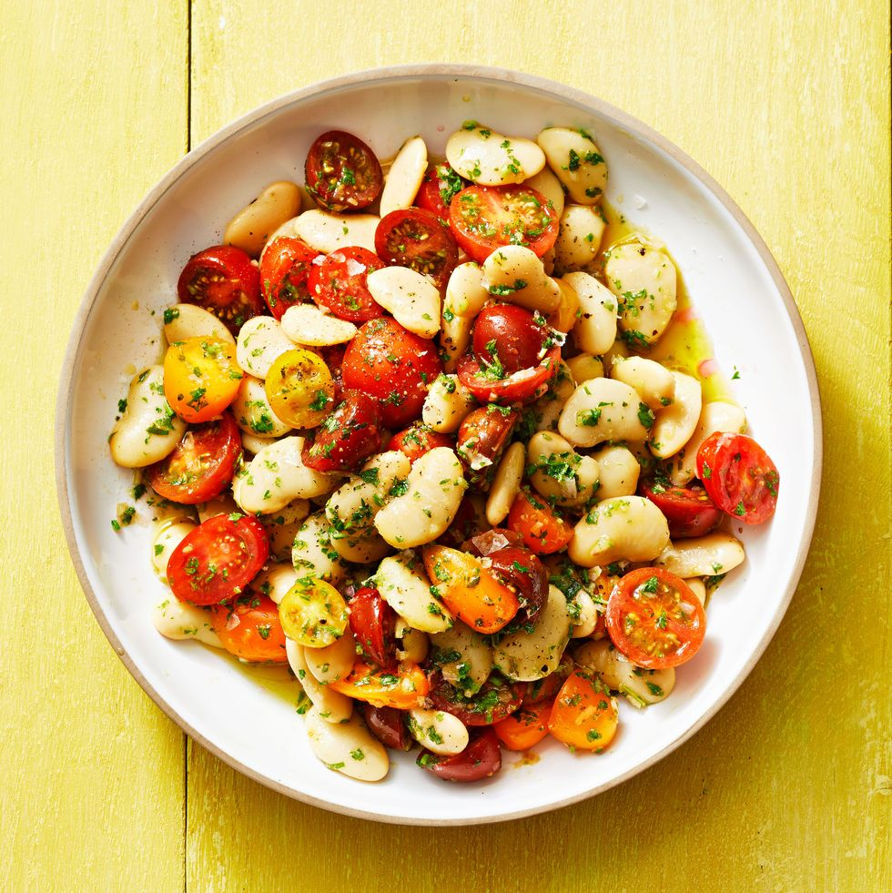

Butter Bean Salad with Herby Vinaigrette

Creamy butter beans are tossed with sweet grape tomatoes and a quick vinaigrette for an easy, satisfying salad that's ideal for a potluck side or leftovers the next day.
Ingredients
1/2 small shallot, roughly chopped
1 c.flat-leaft parsley leaves and tender stems
2 14-ounce cans butter beans,rinsed.
Steps
- In mini food processor, process oil, vinegar, and shallot until smooth.
- Add Parsley, 1/2 teaspoon salt, 1/4 teaspoon pepper.
- Pulse mini food processor until finely chopped.
- Transfer to a large bowl and toss with beats and tomatoes